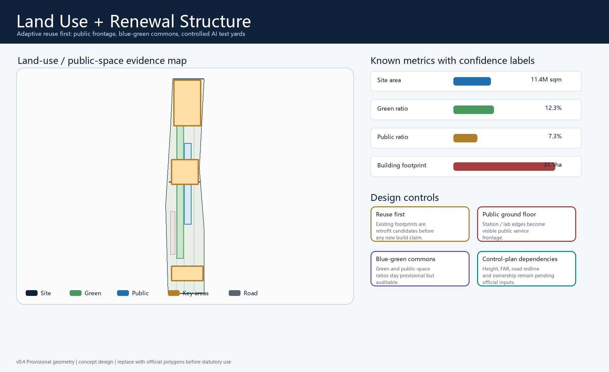
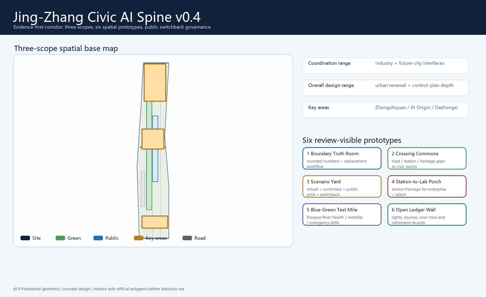

Three-level scope

Metrics
Key areas
ZhongzhiyuanAI OriginDazhongsiThree areas form a test-civic-enterprise sequence.
AI+ scenarios

Risk note
No official approval, FAR, height, ownership, road redline or utility claim is made; replace provisional polygons and rerun all metrics when official files become available.
Overview Map
The railway heritage park is treated as a civic AI spine connecting key areas and rail-walkable nodes; provisional geometry remains only for intake and discussion.

Land Use
Mixed AI research, public service, culture, talent-life and open-space functions are structured through geometry/land_use.geojson.
Transport and Walkability
Rail stations, slow mobility gaps, bicycle parking and station-area guidance are organized as a continuous public network.
Blue-Green Public Space
The heritage park, Xiaoyue River wing, pocket plazas and AI learning nodes form an open civic interface.
Buildings
Building strategy distinguishes retain, renovate, demolish and new-build categories; footprint metrics remain conceptual.
Renewal Projects
Projects cover data completion, walkability repair, scenario sandboxes, service nodes, enterprise interfaces and operations.
AI Scenarios
Scenarios include walkability copilot, station guidance, safety review, heritage guide, enterprise service, education and medical navigation.
Core Metrics
Metric declarations are aligned with metrics.json for site_area_sqm, green_ratio and public_space_ratio.
Task Coverage
Task coverage is recorded in compliance, standard and design-depth matrices.
Self-Check Status
Local deterministic, spatial, visual and professional checks are used; provisional key areas retain warnings.
Sources
Source use follows data/source_registry.json and submission sources.json.
Assumptions
Official polygons, controls, ownership, utilities, heritage and road redlines remain pending.
v0.2 Review Response
Added brand system, three-area/two-wing loop, six reference mechanisms, 12 scenario governance cards, 3 industrial tests, 3 landmark concepts, component kit, operations calendar, rights ledger, bilingual check and inclusion responses.
v0.3 Score Repair Evidence
Added six spatial prototypes, 12 work packages, global case transfer table, ecosystem mechanism map, inclusion matrix, culture kit, key-area operating sections and score-repair map. These are concept-only and preserve provisional-boundary warnings.
v0.6 One-Page Scoring Evidence Map
This page compresses the seven review dimensions into verifiable entry points: taskbook coverage, original civic operating system, AI scenario governance, 12 delivery packages, six inclusion pathways, cannot-support risk boundaries, and CN/EN expression closure. Evidence links back to civic-spine-claim-provenance-audit.json, civic-spine-delivery-audit-result.json, self_check.json, metrics.json, and GeoJSON; it does not claim official redlines, implementation approval, gallery publication, or final score.
Replayable
run-civic-spine-claim-provenance.js --check: 10/10 visible claims PASS.
Deliverable
run-civic-spine-delivery-audit.js --check: 12/12 scenarios, 12/12 packages, 3/3 sections, and 6/6 inclusion groups PASS.
Rejectable
4/4 negative fixtures are rejected, proving human takeover, privacy, pause trigger, and professional interface cannot be removed.
v0.5 Verification Evidence
Two local runners now pass: claim provenance verifies 10/10 visible claims; delivery audit verifies 12/12 scenario cards, 12/12 implementation packages, 3/3 key-area operating sections, 6/6 inclusion groups and 4/4 negative fixtures. This proves replayable package structure only, not official redline, field performance, score, publication or endorsement.